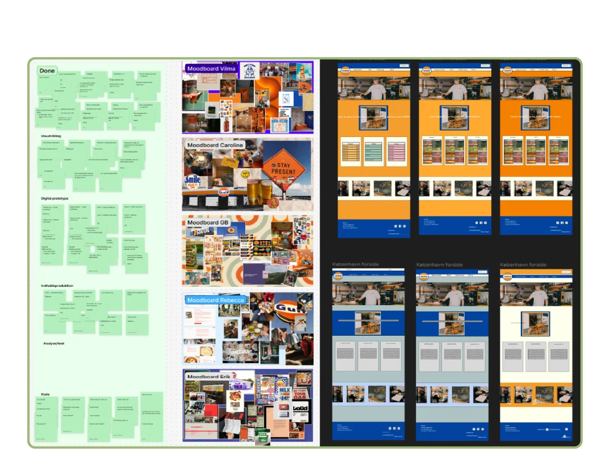
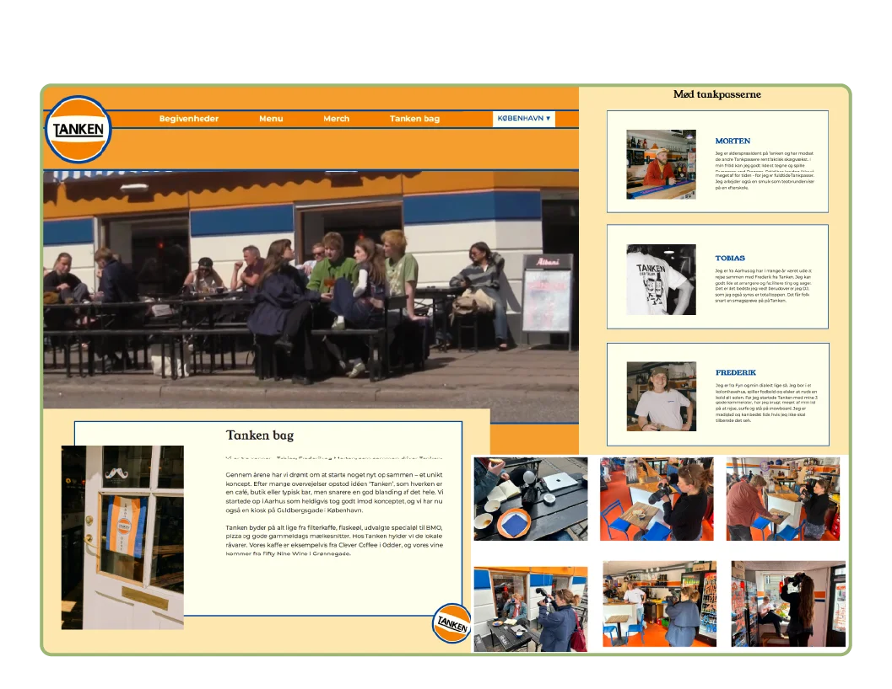
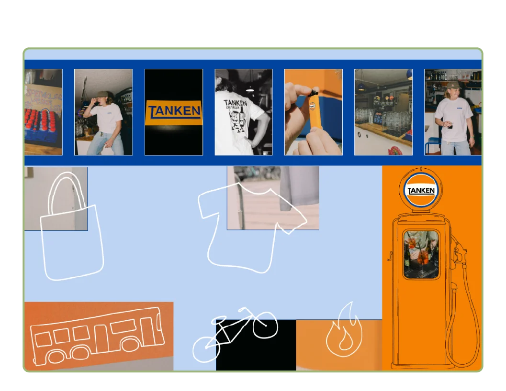

Grundlæggende Web
Tema 5
Formål
Dette første tema giver en grundlæggende introduktion til de mest anvendte redskaber i en multimediedesigners værktøjskasse. Redskaberne udgør fundamentet for resten af din uddannelse på MMD.
Du vil blive introduceret til grundlæggende faglige begreber inden for design af digitale brugergrænseflader, digital indholdsproduktion, digital kommunikation og responsivt webdesign.
Du lærer at sætte websider op i html og css og får de første hands-on færdigheder inden for udarbejdelse af grafik og billedbehandling samt opsætning af tekst og billeder i Figma.

Gruppearbejde
Projektstyring med SCRUM
I tema 5 prøvede jeg for første gang at kode en hjemmeside i en gruppe. Det var en utrolig spændende oplevelse, da vi alle kom med forskellige kompetencer og baggrunde inden for faget.
For at styre processen lærte jeg at arbejde med SCRUM rammeværket. Det viste sig at være en rigtig god metode til at samle gruppen i starten af dagen og skabe et fælles overblik over dagens fokusområder, og hvor langt vi var i processen. Det grønne element på billedet viser vores færdige SCRUM board, som endte med at være fyldt med post-it notes, hvilket vidner om vores mange opgaver og idéer undervejs.
Kommunikation og kreative kompromisser
At arbejde så tæt sammen i en gruppe bød også på faglige udfordringer, da vi alle har vores egen smag og personlige holdninger. Vi var naturligvis ikke enige om alle designidéer undervejs, men det gav mig en super god læring i, hvordan man kommunikerer professionelt med fremtidige kollegaer, når der opstår uenigheder.
Overordnet var vi dog enige om den visuelle retning, hvilket vores fire moodboards også afspejlede, da de mindede meget om hinanden i stilen. Vi fik skabt et trygt rum, hvor alle kunne byde ind med meninger og input, og vi sørgede altid for at afprøve hinandens idéer i praksis, for eksempel ved at teste de mange forskellige forslag til baggrundsfarver, før vi tog den endelige beslutning.

Virksomhedssamarbejde
Professionel kommunikation og kundekontakt
Sideløbende med gruppearbejdet fik vi til opgave at finde en hjemmeside for en eksisterende virksomhed og give deres site en visuel og funktionel opdatering. Det betød, at jeg også skulle lære at kommunikere professionelt med en rigtig virksomhed. Det var en utrolig interessant oplevelse som ny studerende pludselig at skulle ud og pitche sig selv og sine kompetencer.
Vi fandt heldigvis en rigtig hyggelig café og bar ved navn Tanken, hvor ejeren var utrolig imødekommende. Vi kom hurtigt i gang med arbejdet og skulle blandt andet stå for indsamling af indhold i form af billeder og videomateriale. Her var både vi selv og medarbejderne ihærdige medarbejdere i processen, hvilket gav en rigtig fed arbejdserfaring.
Balancegangen mellem kundens vision og eget design
Da vi kodede og designede for en eksisterende virksomhed, var det afgørende, at vi vægtede ejerens visioner og idéer højt i vores designproces – selvfølgelig kombineret med vores egne kreative input og faglige viden. Det var enormt lærerigt for mig at arbejde videre på et koncept, som i forvejen stod stærkt og havde en klar retning. Udfordringen lå i at give websiden nyt liv og opdatere det digitale udtryk, samtidig med at vi bevarede den originale sjæl og tanke bag stedet.

Min process
Selvstændig kodning og tekniske sejre
På websiden fik jeg til opgave at kode siden med merchandise, hvilket var nemmere sagt end gjort. Jeg valgte nemlig at kaste mig ud i at lave et slideshow. Det var ikke noget, vi havde lært i undervisningen endnu, så jeg måtte selv søge efter løsninger på internettet og fandt frem til en god instruktionsvideo på YouTube. Selvom jeg ikke forstod hele kildekoden fuldstændigt i dybden, fangede jeg fundamentet og logikken bag de enkelte dele. Slideshowet endte med at fungere præcis, som det skulle, hvilket føltes som en rigtig stor sejr i sig selv.
Illustrationer og faglige bidrag til gruppen
Jeg blev desuden den i gruppen, som stod for at tegne alle vores visuelle illustrationer, hvilket jeg er blevet utrolig glad for. Gennem denne opgave fik jeg for alvor styr på mit pen tool i Illustrator, og jeg lærte, hvordan man styrer vektorerne, så de gør præcis, som man ønsker.
Det var en rigtig rar følelse at opdage, at jeg havde en stærk visuel færdighed, som jeg kunne bidrage med til fællesskabet. Det gav en fantastisk dynamik, hvor jeg både kunne dygtiggøre mig på egne områder og samtidig lære en masse nye ting fra de andre i gruppen.